We often want to solve problems that are expressible in terms of a traversal or search over a graph. Examples include:
Generally, the goal of a graph traversal is to visit all nodes reachable from a given root node or set of root nodes. In an undirected graph we follow all edges; in a directed graph we follow only out-edges.
Abstractly, graph traversal can be expressed in terms of the tricolor algorithm due to Dijkstra and others. In this algorithm, graph nodes are assigned one of three colors that can change over time:
The progress of the algorithm is depicted by the following figure. Initially there are no black nodes and the root is gray. As the algorithm progresses, white nodes turn into gray nodes and gray nodes turn into black nodes. Eventually there are no gray nodes left and the algorithm is done.
The algorithm maintains a key black–white invariant at all times:
1. The root is not white.
2. There is no edge from a black node to a white node.
This is clearly true initially, and because it is true at the end, we know that any remaining white nodes cannot be reached from the black nodes.
The algorithm pseudo-code is as follows:
This algorithm is abstract enough to describe many different graph traversals. It allows the particular implementation to choose the node n from among the gray nodes; it allows choosing which and how many white successors to color gray; and it allows delaying the coloring of gray nodes black. We say that such an algorithm is nondeterministic because its next step is not uniquely defined. However, as long as it does some work on each gray node that it picks, any implementation that can be described in terms of this algorithm will finish. Moreover, because the black–white invariant is maintained, it must reach all reachable nodes in the graph.
One advantage of defining graph search in terms of the tricolor algorithm is that the tricolor algorithm works even when gray nodes are processed concurrently, as long as the black–white invariant is maintained. The invariant ensures that whatever graph traversal we choose, the algorithm will work even when parallelized.
The two most common graph traversal algorithms are breadth-first search (BFS) and depth-first search (DFS). The BFS pseudocode looks like this:
frontier = new Queue();
frontier.push(root);
root.color = gray;
for (v != root) v.color = white;
while (frontier not empty) {
Node g = frontier.pop(); // g is a gray node
foreach (g → v) {
if (v.color == white) {
frontier.push(v);
v.color = gray;
}
}
g.color = black;
}
Breadth-first search is so called because it explores nodes in the order of
their distance from the root, where distance is defined as the minimum
path length from a root to the node. We can compute distances explicitly by
replacing the colors with a distance field:
frontier = new Queue();
frontier.push(root);
root.distance = 0;
for (v != root) v.distance = ∞;
while (frontier not empty) {
g = frontier.pop();
foreach (g → v) {
if (v.distance == ∞) {
frontier.push(v);
v.distance = g.distance + 1;
}
}
}
Here the white nodes are those whose distance field is ∞, the gray nodes are those
whose distance field is finite and that are in frontier, and the black nodes are
those whose distance field is finite and that are not in frontier.
When a new white node is discovered, its distance is set to a finite value one greater than its predecessor, and it is pushed onto the queue; this corresponds to turning the node from white to gray. All nodes on the queue are gray. When a node v is popped off the queue, we look at all its successors; any that are white are colored gray and pushed onto the queue. When done, v changes from gray to black.
The search is breadth-first because frontier is a first-in, first-out (FIFO) queue.
The final distance value of a node is the length of the minimum path from a
root to that node.
All the nodes on the queue have distance within one of each other.
In general, there is a set of nodes to be popped off,
at some distance k from the source, and another set of elements, later
on the queue, at distance k+1. Every time a new node is pushed onto the
queue, it is at distance k+1 until all the nodes at distance k
are gone, and k then increases by one.
Suppose that we run this algorithm on the following graph, starting with the
root A and assuming that the successors of any node are pushed onto the queue in alphabetic order:
The following sequence of nodes pass through the queue, where each node is annotated by its minimum distance from the root A. (We are pushing onto the right end of the queue and popping from the left.)
A0 B1 D1 E1 C2
Clearly, nodes are pushed and popped in distance order: A, B, D, E, C. This is very useful when we are trying to find the shortest path through the graph from a root to a node. When a queue is used in this way, it is known as a worklist; it keeps track of work left to be done.
What if we replace the FIFO queue with a LIFO stack? That is, suppose we change the first line of the program to
frontier = new Stack();In that case we get a completely different order of traversal. Assuming that successors are pushed onto the stack in reverse alphabetic order, the successive stack states look like this (elements are pushed and popped on the left):
A B D E C D E D E E
With a stack, the search will proceed from a given node as far as it can before backtracking and considering other nodes on the stack. For example, the node E had to wait until all nodes reachable from B and D were considered. This is depth-first search.
A more standard way of writing depth-first search is as a recursive function,
using the call stack instead of an explicit stack. We start with every node
white except the (gray) root node and apply the function DFS to
the root:
/** Effect: Color black all nodes reachable on paths from g where all
* nodes on the path except g are white.
* Requires: g is gray
*/
DFS(Node g) {
foreach (g → v) {
if (v.color == white) {
v.color = gray;
DFS(v);
}
}
g.color = black;
}
You can think of this as a person walking through the graph following arrows and never visiting a node twice except when backtracking, when a dead end is reached. Running this code on the graph above yields the following graph colorings in sequence, which are reminiscent of but a bit different from what we saw with the stack-based version:
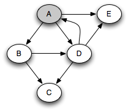 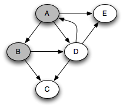 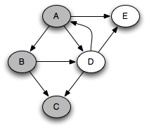 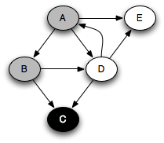 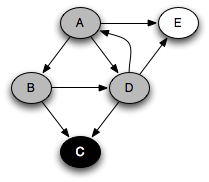 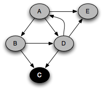 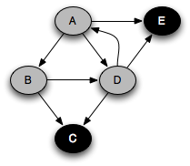 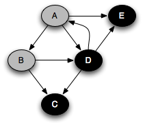 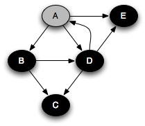 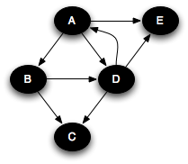
Note that at any point in time, there is a single path of gray nodes
leading from the starting node and leading to the current node
v. This path corresponds to the stack in the earlier
implementation.
With DFS, the distance field does not necessarily represent the
shortest distance from the root, so let's get rid of it. A much more useful
datum is the DFS number, which gives the order in which we first
visit the nodes. Here is the modified DFS algorithm that computes the DFS
number, again using a LIFO stack as the frontier:
frontier = new Stack();
frontier.push(root);
nextDfs = 0;
for (v) v.dfs = ∞;
while (frontier not empty) {
g = frontier.pop();
if (g.dfs < ∞) continue; // dup on stack popped
g.dfs = nextDfs++;
foreach (g → v)
if (v.dfs == ∞) frontier.push(v);
}
or as a recursive method:
nextDfs = 0;
for (v) v.dfs = ∞;
DFS(root);
DFS(Node g) {
g.dfs = nextDfs++;
foreach (g → v)
if (v.dfs == ∞) DFS(v);
}
For both BFS and DFS, there are at most |V| executions of the while loop, as a node can go on the stack or queue at most once, and the body of the loop on successors can be executed at most |E| times over all executions, since each edge is looked at only once. So the asymptotic time complexity of BFS and DFS is linear, i.e. O(|V| + |E|).
During execution, the BFS and DFS algorithms maintain an amount of state proportional to the size of the queue or stack. For DFS, this is proportional to the length of the path from the root to the node currently being visited. For BFS, this is proportional to the size of the perimeter of nodes at distance k or k+1 from the root. In both algorithms, the amount of state can be O(|V|). For DFS this happens when searching a linked list. For BFS this happens when searching a graph with a lot of branching, such as a binary tree, because there can be as many as 2k nodes at distance k from the root. For balanced binary trees, DFS maintains state proportional to the height of the tree, or O(log |V|). On such graphs, DFS requires less space.
The sequence of calls to DFS form a tree: the DFS tree of the program. This is a subgraph of the original graph. In the above example, the DFS tree is:
The DFS numbering is a preorder numbering of the DFS tree.
If we want to search the whole graph, then a single traversal may not be enough, because there may be vertices that are not reachable from the root. For example, consider the original graph expanded with two new nodes F and G:
A DFS traversal starting at A will see the nodes A–E as before, but will not see G and F, since they are not reachable from A. To ensure that all nodes are visited, we must check after each traversal whether there still exist unvisited nodes, and start a new traversal from one of the unvisited nodes if so. For example, suppose we next choose F to start from. Then we will reach all nodes. Instead of constructing just one tree that is a subgraph of the original graph, we get a DFS forest consisting of two trees:
One of the most useful algorithms on graphs is topological sort, in which the nodes of an acyclic graph are placed in a total order consistent with the edges of the graph; that is, if there is an edge (u,v), then u comes before v in the total order. This is useful when you need to order a set of elements and some elements have no ordering constraint relative to other elements.
For example, suppose you have a set of tasks to perform, but some tasks have to be done before other tasks can start. In what order should you perform the tasks? This problem can be solved by representing the tasks as nodes in a graph with an edge from task 1 to task 2 if task 1 must be done before task 2. A topological sort of the graph will give an ordering in which all of these constraints are satisfied.
For example, to make lasagna, you might need to carry out tasks described by the following graph:
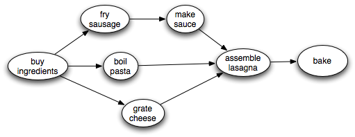There is some flexibility about the order to perform the steps, but clearly we need to make the sauce before we assemble the lasagna. A topological sort will find some ordering that obeys this and the other ordering constraints.
Of course, it is impossible to topologically sort a graph with a cycle in it. So to topologically sort a graph, it must be a dag. But the interesting thing is that the condition of being a dag is not only necessary for the existence of a topological sort, it is also sufficient. That is, all dags have at least one topological sort.
We can obtain a linear-time algorithm for topological sort from DFS. The key observation is that a node finishes (is marked black) only after all of its descendants have been marked black. Therefore, a node that is marked black later must come earlier when topologically sorted. A a postorder traversal generates nodes in the reverse of a topological sort:
Algorithm:
Perform a depth-first search over the entire graph, starting anew with an unvisited node if previous starting nodes did not visit every node. As each node is finished (colored black), put it on the head of an initially empty list.
This takes time linear in the size of the graph: O(|V| + |E|).
For example, in the traversal example above, nodes are marked black in the order C, E, D, B, A. Reversing this, we get the ordering A, B, D, E, C. This is a topological sort of the graph. Similarly, in the lasagna example, assuming that we choose successors top-down, nodes are marked black in the order bake, assemble lasagna, make sauce, fry sausage, boil pasta, grate cheese. So the reverse of this ordering gives us a recipe for successfully making lasagna, even though successful cooks are likely to do things more in parallel!
We can classify the various edges of the graph based on the color of the node and DFS numbers when the DFS algorithm follows that edge. There are four classes: tree edges, back edges, forward edges, and cross edges. The classification is not an absolute property of the graph, but depends on what node(s) we choose as root(s) and in what order the algorithm selects successors to push.
Here is the expanded (A–G) graph with the edges colored to show their classification.
When the sink node of the edge is white, the edge is a tree edge, shown as solid black arrows in the diagram. (The graph looks different in this picture because the nodes have been moved to make all the tree edges go downward, but it is the same graph.) The tree edges give the sequence of recursive calls performed in the recursive implementation of DFS. A tree edge always goes to a successor in the DFS forest.
When the sink node of the edge is gray, it is a back edge, shown in red. Because there is only a single path of gray nodes, a back edge loops back to an earlier gray node that is still on the stack, creating a cycle. Back edges always go to an ancestor in the DFS forest. A graph has a cycle if and only if it contains a back edge.
When the sink node of the edge is black, it is either a forward edge or a cross edge. It is a forward edge if it goes to a descendant in the DFS tree, and it is a cross edge if it does not. We can tell the difference by looking at the DFS number: a forward edge goes to a black node with a higher DFS number, and a cross edge goes to a black node with a lower DFS number.
We can classify and label the edges during DFS if we like, and the algorithm is still linear time.
It is often useful to know whether a graph is acyclic. To detect whether a graph has a cycle, we can perform DFS with edge classification on the entire graph and ask whether there exists a back edge anywhere in the graph. By a fairly intricate argument, it can be shown that the node with the smallest DFS number in any directed cycle lies at the root of a subtree of the DFS tree containing all nodes of the cycle. Then the cycle must contain a back edge, since that is the only way a node can go to an ancestor in the DFS tree. Conversely, if there is a back edge, then there is a cycle consisting of that back edge and tree edges. Thus the existence of cycles can be detected in linear time.
An undirected graph is connected if there is a path between any two nodes. Graphs need not be connected (although we have been drawing only connected graphs so far). However, it is entirely possible to have a graph in which there is no path between two nodes. A connected component of an undirected graph is a maximal connected subgraph; that is, a subgraph that is connected, but not contained in any larger connected subgraph. For example, the following undirected graph has three connected components:
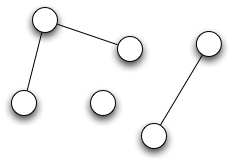The connected components problem is to find the connected components of a graph and to make it possible to quickly determine for a given node which connected component it belongs to. This can be very useful. For example, suppose that different nodes correspond to different jobs that need to be done, and there is an edge between two nodes if they need to be done on the same day. Then to find out the maximum number of days that are needed to carry out all the jobs, we only need to count the components.
Algorithm:
Perform a DFS or BFS over the graph. As each traversal starts, create an object representing a new component. All nodes reached during the traversal belong to that component and can be made to point to the component object. The number of traversals is the number of components.
For directed graphs, strong connectivity is the more useful notion. A directed graph is strongly connected if every vertex is reachable from every other vertex by a directed path. A strongly connected component (or just strong component) of a directed graph is a maximal strongly connected subgraph. For example, the following directed graph has four strong components consisting of vertices {A}, {B,C}, {D,E,F}, and {G}, respectively.
A graph and its dag of strong components
Note that all nodes in a cycle are always part of the same strong component, so every graph can be viewed as a dag composed of strong components, as illustrated on the right in the above figure.
An efficient algorithm due to Kosaraju finds strong components by performing DFS twice:
For example, consider the graph in the above figure. Running a DFS and choosing children top to bottom, we will obtain tree edges (A,B), (B,C), (C,G), (A,D), (D,E), and (E,F), back edges (C,B), (F,E) and (F,D), and cross edges (D,C) and (F,G). Ignoring back edges and topologically sorting, we might get the sequence A,D,E,B,C,F,G. The first DFS in step 3 starting at A would give the strong component {A}. The second starting at D would give {D,E,F}. The third starting at B would give {B,C}. The last starting at G would give {G}. Collapsing strong components into single nodes gives the dag shown on the right in the figure. Note that the dag of strong components will also be topologically sorted by the algorithm.
Although Kosaraju's algorithm takes linear time, it requires DFS on both
the graph and its transpose, requiring construction or mainenance of the transposed graph.
However, Tarjan's linear-time algorithm performs just one DFS on the graph
and is only slightly more complicated than the DFS algorithm itself.
Each node has a variable dfs that keeps track of the DFS number and another variable
low that keeps track of the lowest DFS number of any node
that is part of the same strong component, which can be computed recursively
during the DFS traversal.
scc(Vertex v) {
v.dfs = v.low = dfs++;
s.push(v);
foreach (v → w) {
if (w.dfs == ∞) {
scc(w);
v.low = min(v.low, w.low);
} else if (w is on the stack s) {
v.low = min(v.low, w.dfs);
}
}
if (v.low == v.dfs) {
// pop everything up to v and make a strong component from it
SCC nodes = new SCC();
do {
w = s.pop();
nodes.add(w);
} while (w != v);
SCCs.add(nodes);
}
}
See [2] for more details.